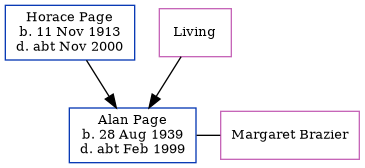

Alan Stanley Page 1939 - c1999
[ Home ] | [ Calendar ] | [ Surnames Index ] | [ Errors ] | [ Family History ]The child of Horace Page (a transport worker haulage) and Edith Alexander, Alan Page, the fourth cousin once-removed on the father's side of Nigel Horne, was born in Folkestone, Kent, England on 28 Aug 19391,2. He married Margaret Brazier in Folkestone around Aug 19673. On 29 Sept 1939, he was living at 30a Oaks Road in Folkestone1.
He died c. Feb 1999 in Folkestone2.
Parents
- Horace Stanley Wallis was born on 11 Nov 1913
- Edith Clara Annie
Citations
- 1939 Register - Findmypast (was the son of the head of the household)
- England & Wales deaths 1837-2007 - Findmypast
- England & Wales Marriages 1837-2005 - Findmypast
Media
England & Wales births 1837-2006 - BMD/B/1939/3/AZ/000909/119
England & Wales deaths 1837-2007 - BMD/D/1999/3/83292303
1939 Register Transcription - TNA-R39-1724-1724I-007-16
Family Tree
Map
Generated by ged2site. Last updated on Jul 3, 2024